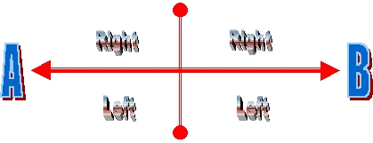

The astral is the closest dimension to the physical. It overlays and permeates the world like a huge mind net, catching and holding all thought. Its contents are created by the collective consciousness of the world mind. It contains all the thoughts, memories, fantasies, and dreams of every living thing in the world. In it, the laws of sympathetic attraction, or like attracts like, causes this ocean of mind stuff to strata and settle into layers or pools. These pools of thought are more commonly called astral planes, astral worlds, astral sub planes or astral realms.
The astral dimension is composed of astral matter and is aptly described as mind stuff. It is extremely sensitive to thought and can be moulded into any shape or form. These creations can be so perfect as to be indistinguishable from reality.
The best way to explain this, mind stuff, is to draw a comparison between astral matter and unexposed, high speed photographic film. When this film is exposed to light, focused by the cameras lens, a perfect image of reality is instantly burnt into the film by the chemical reaction of the film to light. When astral matter is exposed to thought, focused by the lens of the mind, a perfect image of reality is instantly formed out of astral mind stuff by the reaction of astral matter to thought. The complexity and durability of any creation in the astral dimension depends largely on the strength of the mind doing the creating.
This is how the subconscious mind creates dreams: By tuning into the astral dimension during sleep, it can create any scenario it wishes. This is the subconscious mind's way of solving problems and of communicating with the conscious mind. It creates a series of complex thought form scenarios and projects them into the mind stuff of the astral dimension, where they become solid. The conscious mind then lives through and experiences these created scenarios in the dream state. In a way its like a movie projector (subconscious mind) projecting onto a movie screen (astral dimension).
Any new object in the real world is assimilated into the astral dimension over a period of time. A thought form representation of it first grows in the lowest part of the astral, close to the physical dimension, becoming more and more permanent as time goes on. As with all thought forms, the more attention paid to it the quicker it grows.
The higher up in the astral dimension, or the further away from the physical, the less thought forms, of the physical world, as we know it, are found. Physical things have to soak in to it for a very long time before they take shape, and are found, in the higher astral.
Have you ever tried to move around a strange house in the dark? You bump into everything, right. But as you become familiar with it though, a mental picture of your surroundings forms in your mind, and you can find your way around it better. The longer you spend in this house the stronger this mental picture becomes. This is similar to how things are assimilated and grown, as thought forms, in other dimensions.
The generation of thought forms in the astral also works in the reverse. If a physical object has been around for a very long time, it will have grown a lasting thought form impression in the astral. After the object is destroyed or removed, its thought form still endures. You may, for example, in the astral, find furniture in your house you don't have, jumbled up with your own. This is caused by the decaying thought forms of old stuff, belonging to previous tenants etc, still being there, years after the originals have gone.
Old thought forms do not follow their physical counterpart around when they are moved. New ones begin to grow in the astral wherever it is while the old ones slowly decay. The longer a thing is in one place, the stronger the thought form will become in that place. This also applies to buildings, structures and geological features. You may project into a park and find a house, bridge, stream, hill etc that you know is definitely not there. These may have existed in times past. The higher up in the astral you go, the older the thought forms are, or the further back in geological time you appear to be.
The rate of growth of a thought form depends largely on the amount of attention paid to it. For example, a famous painting; loved, viewed and highly thought of by millions, will have a much stronger thought form than that of a common painting that hangs in someone's bedroom and is only viewed by a few. The number of thought forms you find in the astral also depends on how close you are to the physical dimension. If you are very close, as in a real time projection or OOBE, very few thought forms, if any, will be found. In a real time OOBE you are not quite in the astral dimension but are existing as an astral form in the buffer zone between the astral and the physical dimensions.
In the physical body we have 220 degrees of vision, i.e. we can only see in front of us, but not behind, above and below at the same time. In the Astral body we have MORE than 360 degrees of vision and can see on all sides at once. This is Spherical vision. During projection, habit forces us to focus our attention in one direction only, where we feel the forward part of our vision is. The view behind, above, below, left and right is still there, and seen all at once, but it can not be assimilated by the brain, all at once. This goes against the brains lifelong habit of frontal vision. Spherical vision is like being one huge multi faceted eye that can see in all directions, up, down, left, right, front, back, but all at once!
In the astral body you do not have any physical organs, i.e., eyes. You are a non-physical point of consciousness floating in space. You are also unaffected by gravity and other laws of physics. In this state there are no ups or downs, backs or fronts, left or rights. It is only lifelong habit that tries to force this perspective on you during projection.
It is important to understand spherical vision, if you are to operate competently in the astral. This is especially so when you project, in real time, close to the physical dimension. Spherical vision will often cause you to think you are in a mirror image dimension, or a reversed copy of reality. This means your house, for example, will appear to be reversed, back to front. This is caused by you losing your original natural viewpoint during projection.
At some point during the projection you have become disoriented and taken a different viewpoint from normal, i.e., you have rotated or turned upside down or inside without thinking. This reverses your natural left right, up down viewpoint. This tricks the subconscious mind into reversing the place you are in so your conscious mind can function properly.
As you don't have a physical body in the astral, if you want to look behind yourself you don't have to turn around, or move at all. You just change your viewpoint to the rear. This, when done without moving, causes the mirror image effect, in a way its like looking in a mirror to see behind.
The diagram below illustrates this reversal of viewpoint without turning, note left and right do not change:

That is, if viewpoint (A) becomes viewpoint (B) without turning, then Left and Right are not reversed. This causes the subconscious mind to use its creative power to correct the view by reversing it, or parts of it. This is easier and causes fewer problems for the conscious mind than if it had to try and accept a reversal of left and right.
A similar effect can be had by lying down and looking above your head, or standing on your head and trying to pick the left and right sides of things. This causes a slight confusion in your sense of left and right, i.e., you have to consciously calculate which is left and right from your reversed position. This slight confusion is all that is needed to trick the subconscious mind into creating something easier to accept.
Your brain is unable to assimilate this reversal and thus gives you a new perspective according to what it feels is left and right at the time. Once you consciously notice this anomaly it is too late to reverse it. The brain cannot accept a conscious change of left and right.
If you understand spherical vision though, and happen to get reversed sometime during a projection, it is no longer a problem. You can take it into account and function normally, rather than thinking you are wasting your time in some strange mirror dimension, i.e., if you had plans to do something in the astral you still can. All you have to do is, take your left right coordinates from the building or structure around you, and ignore your own sense of left and right completely.
Everything you see while you are in the astral dimension is directly perceived by the mind. It is a simple matter for the subconscious mind to twist or reverse, all, or even part of, your conscious perception of reality during a projection.
Note: This reversal of viewpoint can happen many times during any one real time projection.
The subconscious mind has VASTLY greater powers of visualisation than the conscious mind. It is like comparing a super computer to an child's calculator. In the astral dimension, during any conscious projection or lucid dream, where the conscious mind is aware, this difference can cause great confusion. The subconscious mind simmers beneath the surface during any projection. All that creative power is just bursting to get out, to create, and it will do just that any chance it gets. This difference in creative power, combined with the lifelong habit of normal frontal vision, is the cause of the "Alice In Wonderland Effect." Let me explain....
Take these together:
And you have a recipe for total confusion.
You project your astral body and look around your room. Everything appears normal, but suddenly, you notice the door is on the wrong wall? While looking around, you have seen this door with your rear vision, confusing your natural left, right, brain perspective. The brain can't assimilate this because your frontal perspective, and the position of the furniture, pictures, windows etc, are normal; but the view behind you is reversed. This tricks the subconscious mind into creating a door where it thinks it should be. When you look at this door, it appears real, even though you know it is in the wrong place. Once it has been created, it will not be uncreated, as that would be unacceptable to your conscious mind. i.e. solid doors don't normally have a habit of vanishing before your eyes.
When you turn to where the door really should be, you will, usually, find the door there as normal. Now you may have two, or more, doors where there should only be one. If you go through the real door, you will find the rest of the house as it should be, hopefully. But, if you go through a false door, the mind knows its false and won't accept it opening to a normal part of your house that it knows can't possibly be there. So, if you open this door you will find something else. It is usually a corridor or passage, you don't have, leading off into other parts of the house you don't have either.
From then on, if you go through this door, you are in Wonderland, where everything is possible, just not very plausible. What you are doing, in effect, is entering the astral dimension via uncontrolled creation, through this door you don't have, but now do. Once the subconscious mind starts creating like this it continues to do so at a geometric rate. It has to, for the conscious mind to assimilate the abnormal situation it is in. At some stage, in this creative maelstrom, the subconscious mind loses it completely and starts tuning in to other parts of the astral. At this point of the projection, all semblance of reality is lost and you fade into the astral dimension proper.
There are many ways this "Alice" effect can happen during a projection, the above example is just one variation. It has been noted by many projectors that at sometime during a projection they seem to lose control of it. Objects appear, disappear, and generally everything gets a little strange. This is caused, basically, by the subconscious mind's vast creative ability being triggered. It starts making and unmaking things, and tuning into other areas of the astral and generally making everything difficult for the poor projector.
To avoid the above problem: Concentrate on what you are doing while you are projecting and don't let your mind wander. The vision reversal problem can be minimised if you concentrate on your forward vision during projection, i.e., focus in one direction at a time. When you turn, follow the room around with your vision and don't allow it to flit from one view to another. The astral is not a good place to relax if you have serious plans.
The vast creative power of the subconscious can, however, be utilised. It is an extremely valuable tool if you know how to use it. I will outline ways to do this, in the third part of this series, under the heading: "Virtual Reality Projection" where I will outline how to custom create your own personal astral realm.
When you project the astral body close to the physical world you do not have a body as such. But, the mind cannot accept this and so provides a thought form one made out of etheric matter. If you try and look at your body, say your hands, you will find they start to melt very quickly. They look pale and odd, and in a couple of seconds your fingers start to melt away like ice under a blow torch. They shorten into pale stumps, then the rest of your hand and arm starts to melt away too. This melting effect only seems to happen when you deliberately try and observe a body part or consciously create something.
Deliberately observing an astral body part like this, uses the conscious mind, which, having poor creative powers, can't hold complex shapes together for very long and it is this that causes the melting effect. If you happen to notice parts of your body, in passing, during projection this melting effect will not be seen.
You can use your conscious mind to create objects while projecting. The duration of these, thought form, created objects depends on the strength of your creative visualisation ability. It also depends on how much time and effort you put in to a creation.
This same melting phenomena happens with any conscious creation done in the astral dimension. If you create for example, a sword, it will appear in your hand just as you imagine it, briefly, and then melt away just like the hand did. If you concentrate on it you can hold it in shape, but as soon as your concentration wavers so does the creation. This is similar to any other visualisation you do in the real world. It is difficult, and you have to concentrate to hold the visualisation in your minds eye. Once your concentration wavers, so does the visualised image. This illustrates the vast difference between the creative powers of the conscious and the subconscious mind.
To make a lasting thought form object you have to trick the subconscious mind into creating it for you. I will deal with this subject, in greater depth, later in the series.
During sleep, the energy body, also known as the etheric body or vitality sheath, is put on charge. It expands and opens in order to accumulate and store energy. The energy body can, normally, only do this in its expanded state during sleep. Once expanded, the chakras trickle power, in the form of etheric matter, into the energy body. During this recharging process the astral body separates and tunes into the astral dimension where it can create and experience dreams.
If this separation is done consciously, or if you become aware after it, you can take some control over it. It then becomes an OOBE, astral projection or lucid dream.
The main differences between an OOBE, astral projection and a lucid dream are:
The OOBE (out of body experience) is a real time projection close to the physical world. This often occurs as part of a near death experience. This is where a person is knocked out of their body as a result of some kind of severe trauma, i.e. car accident, surgery, heart attack, child birth etc. OOBE'ers are aware of things happening in the real world, in real time; such as conversations and events centred around, or near to, their physical body. In many cases, these events and conversations are accurately reported by the person after they have returned to their body.
Note: The OOBE is slightly different from astral projection or lucid dreaming because of its real time, objective aspect. This is caused by the astral body containing a large amount of etheric matter, which holds it close to the physical world.
There are two main causes of real time OOBE:
Note: You can project consciously, and have a real time OOBE if enough etheric matter is generated by the chakras. In an OOBE, reality is perceived as objective (real) and time is normal (real time).
Technically, when you project into the physical world in real time as in an OOBE, it is really into the boundary area of the buffer zone, between the physical and astral dimensions. If the astral body contains enough etheric matter it can exist only slightly out of phase from reality. This means the projection is in real time and so close to the physical dimension as to be indistinguishable from it.
Note: I have checked this many times, by projecting, in real time, during the day and scouting my local area for road works, accidents, incidents etc, then verifying the accuracy of my findings afterwards.
There are strong natural barriers to conscious, real time projection, the OOBE, in the physical world. The amount of etheric matter generated and channelled to the astral body, is one of them. It limits the duration of any real time projection to the degree of chakra development and control.
This is where the astral body is projected into the astral dimension, where things are quite different from the real world. Time is distorted and extended, i.e., an hour in the astral can be like a few minutes in the physical dimension, depending on what part of the astral you are in. Reality is fluid and changeable.
This is where a person becomes fully aware that they are dreaming during a dream. They either take some kind of conscious control over the course of events, or they convert the experience into an astral projection. Lucid dreaming is more similar to an astral projection than to an OOBE, as time and reality are distorted.
Many astral projectors black out before making a conscious exit from their body and return to awareness in the astral dimension. You become aware after the actual separation from the physical body and are usually already in the astral dimension. If you miss the conscious exit from your body you are technically having a lucid dream, not an astral projection as you have become aware after separation.
All three types of projection are closely related, i.e., they all involve the astral body separating from the physical and experiencing a reality separate from the physical body.
| Home | Next Chapter |
| Visit http://www.astraldynamics.com to see the latest updates of Robert Bruce's work, including books such as 'Astral Dynamics' and 'Practical Psychic Self-Defense' |